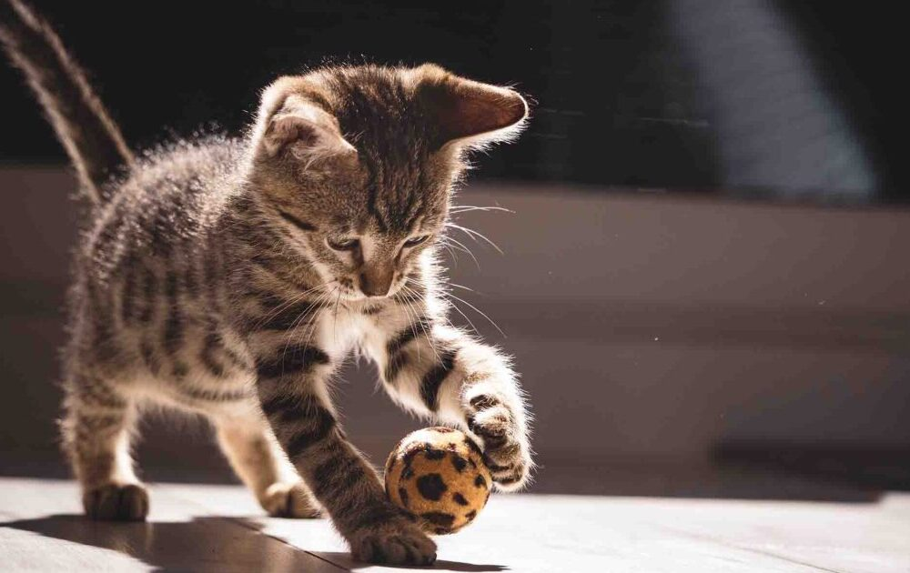
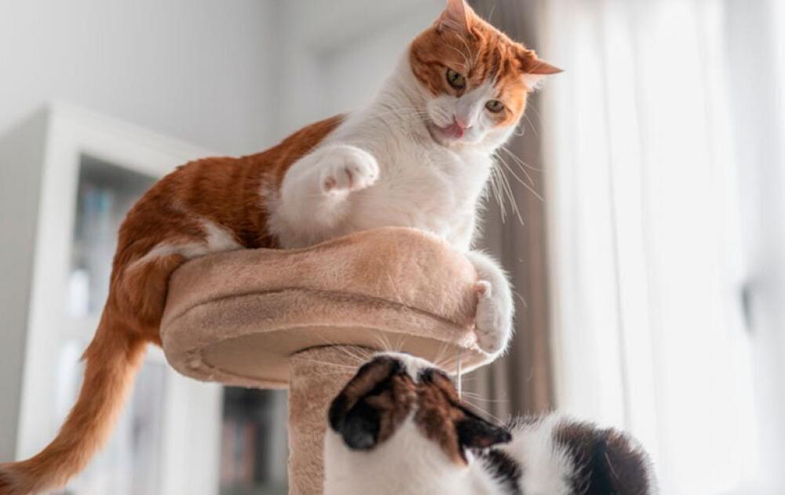

Adopción de gatos

A


Gato de tamaño medio conocido por su elegante y musculoso cuerpo alargado, cabeza triangular y orejas grandes y puntiagudas.
Mas info
Es una raza de tamaño mediano con una constitución fuerte y musculosa, cabeza redonda y pelaje corto, fino, sedoso y brillante.
Más info.
Gato de tamaño mediano a grande con un aspecto salvaje y musculoso, caracterizado por su pelaje corto y liso con motas, que le da una apariencia similar al ocelote
Más info